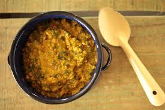

Culianaria Tipica do Tocantins
O Tocantins é um dos estados mais novos do Brasil. Sua gastronomia possui uma grande variedade de pratos que agrada quem vive nele e também quem visita a região. Com forte influência das culturas indígena, portuguesa, paulista e mineira, a maioria de suas receitas tem algum peixe como base. Não seria exagero dizer que a culinária do Tocantins é como uma colcha de retalhos cultural.
Peixe Assado na Folha de Bananeira
O peixe assado na folha de bananeira é um prato preparado com variações em quase toda a costa brasileira e também às margens dos grandes rios das regiões centrais e setentrionais. Mudam os temperos, sai o alho e entram cebola ou coentro, adiciona-se ou não pimenta, acompanha ou não bananas fritas.
Ingredientes
1 peixe inteiro, com aproximadamente um quilo e meio
Suco de meio limão
80 ml de azeite
1 folha de bananeira
Salsinha
Sal e pimenta-do-reino preta a gosto
1 dente de alho
Modo de Preparo
Tempere o peixe com azeite, limão, sal, alho e salsinha batidos no processador
Embrulhe na folha de bananeira e coloque para assar em forno a 180°C por aproximadamente quarenta minutos.
Após os quarenta minutos, retire a folha de bananeira e sirva
Redes Sociais